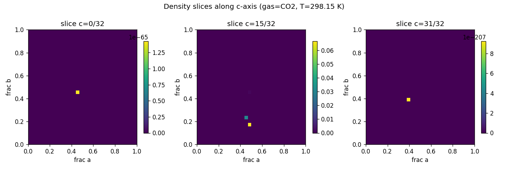
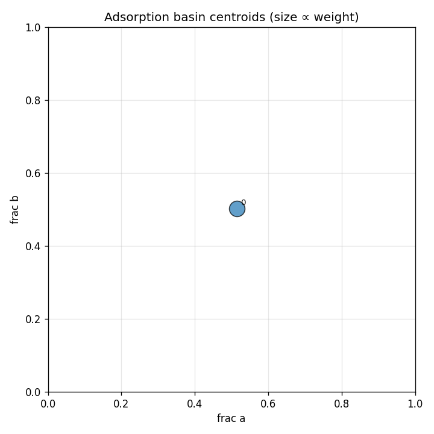

7cb2d1e57e58a008d22cb68fa295a601905ed3db7f009e15ff61343fb5248662
| basin_id | count | weight | mean_energy_eV | spread_A | accessible_fraction |
|---|---|---|---|---|---|
| 0 | 543 | 1.0000 | -0.2960 | 2.9270 | 1.000 |

R-3m (#166),
confidence 0.70, members: [0]
No perturbations applied to this run.
No robustness comparison run.